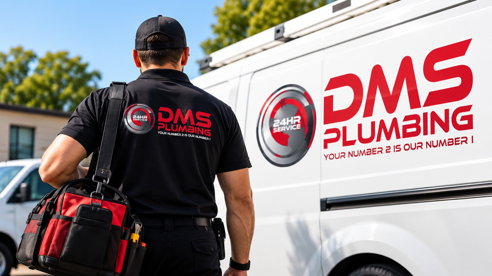

Reliable Plumbing Services
DMS Plumbing provides professional plumbing services to residential, commercial, retail and hospitality customers in Johannesburg and surrounding areas.
Make an Enquiry Call 011 043 5370
Welcome to DMS Plumbing
DMS Plumbing provides professional plumbing services to residential, commercial, retail and hospitality customers. Our goal is to help customers with their plumbing needs and find suitable solutions.
From leaking taps and blocked drains to damaged pipes and geyser problems, we aim to provide reliable assistance.
Our services are suitable for homes, offices, shops, restaurants, hotels and other businesses.
Why Choose DMS Plumbing?
Reliable Service
We aim to provide dependable plumbing services and practical solutions.
Customer Focused
We consider each customer's plumbing problem and service needs.
Professional Approach
We provide plumbing services for homes and businesses.
Clear Communication
We believe customers should receive clear service information.
Who We Serve
Homeowners
Plumbing services for homes and residential properties.
Tenants
Assistance with plumbing problems in rental properties.
Businesses
Plumbing services for offices, shops and commercial properties.
Property Managers
Plumbing assistance for property maintenance and repairs.
How Our Service Works
Contact Us
Explain your plumbing problem.
Discuss the Problem
We discuss the assistance you need.
Receive Assistance
A suitable plumbing service can be arranged.
Follow Up
Receive information about the plumbing work.
Frequently Asked Questions
Yes. DMS Plumbing provides emergency plumbing services 24 hours a day, 7 days a week.
DMS Plumbing provides services in Johannesburg and surrounding areas.
Visit the Enquiry page and complete the plumbing service enquiry form.
DMS Plumbing offers pipe repairs, geyser services, leak detection, drain services and other plumbing solutions.
Need Emergency Plumbing Assistance?
Contact DMS Plumbing for emergency plumbing services.
Telephone: 011 043 5370
Call Now